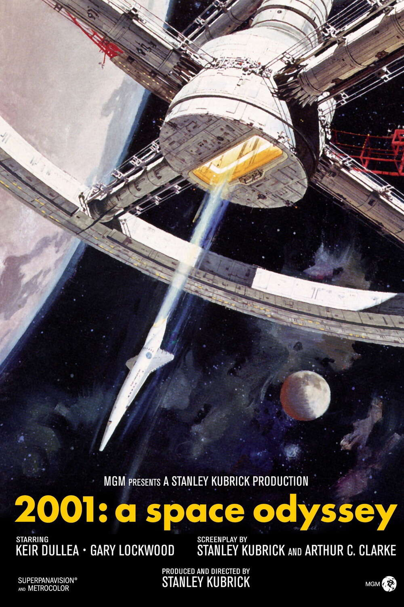

1. The Godfather
1972 Directed by Francis Ford Coppola

En 1945, à New York, les Corleone sont une des cinq familles de la mafia. Don Vito Corleone, "parrain" de cette famille, marie sa fille à un bookmaker. Sollozzo, " parrain " de la famille Tattaglia, propose à Don Vito une association dans le trafic de drogue, mais celui-ci refuse. Sonny, un de ses fils, y est quant à lui favorable. Afin de traiter avec Sonny, Sollozzo tente de faire tuer Don Vito, mais celui-ci en réchappe. Michael, le frère cadet de Sonny, recherche alors les commanditaires de l'attentat et tue Sollozzo et le chef de la police, en représailles. Michael part alors en Sicile, où il épouse Apollonia, mais celle-ci est assassinée à sa place. De retour à New York, Michael épouse Kay Adams et se prépare à devenir le successeur de son père...
2. 2001: A Space Odyssey
1968 Directed by Stanley Kubrick
Un mystérieux monolithe noir influence l'évolution humaine depuis la préhistoire. Des millions d'années plus tard, une équipe d'astronautes dirigée par le Dr. Dave Bowman part en mission vers Jupiter à bord du vaisseau spatial Discovery One. À bord, l’intelligence artificielle HAL 9000 commence à montrer des signes inquiétants d’autonomie et de danger. Le film explore les thèmes de l'intelligence artificielle, de l'évolution, et du destin de l'humanité à travers une narration visuelle ambitieuse et énigmatique.
3. Persona
1966 Directed by Ingmar Bergman

Une célèbre actrice, Elisabet Vogler, cesse soudainement de parler sans raison médicale apparente. Elle est confiée aux soins d’Alma, une jeune infirmière, dans une maison isolée au bord de la mer. Alors que le silence d’Elisabet persiste, Alma commence à lui confier ses pensées les plus intimes. Peu à peu, la frontière entre les deux femmes devient floue, révélant une exploration profonde de l'identité, de la psyché et de la dualité humaine.
4. In the mood for love
2000 Directed by Wong Kar-wai
À Hong Kong, en 1962, M. Chow, journaliste, et Mme Chan, secrétaire, emménagent dans des appartements voisins le même jour. Tous deux découvrent bientôt que leurs conjoints respectifs ont une liaison. Blessés mais discrets, ils développent une relation empreinte de tendresse et de retenue. Tout en essayant de comprendre l’infidélité de leurs partenaires, ils se rapprochent doucement, sans jamais franchir les limites de leur propre morale. Un film mélancolique, visuellement somptueux, sur l’amour non consommé et le poids du temps.
5. Magnolia
1999 Directed by Paul Thomas Anderson
À Los Angeles, durant une seule journée, les vies de plusieurs personnages — un animateur de télévision mourant, son infirmier, son fils gourou de la séduction, une ancienne enfant star, un policier solitaire, et d’autres — s’entrelacent autour de thèmes de rédemption, de douleur, de hasard et de pardon. Le destin semble les relier à travers une série de coïncidences troublantes et d’événements inexplicables. Magnolia est un drame choral intense, à la fois émotionnellement puissant et profondément humain.